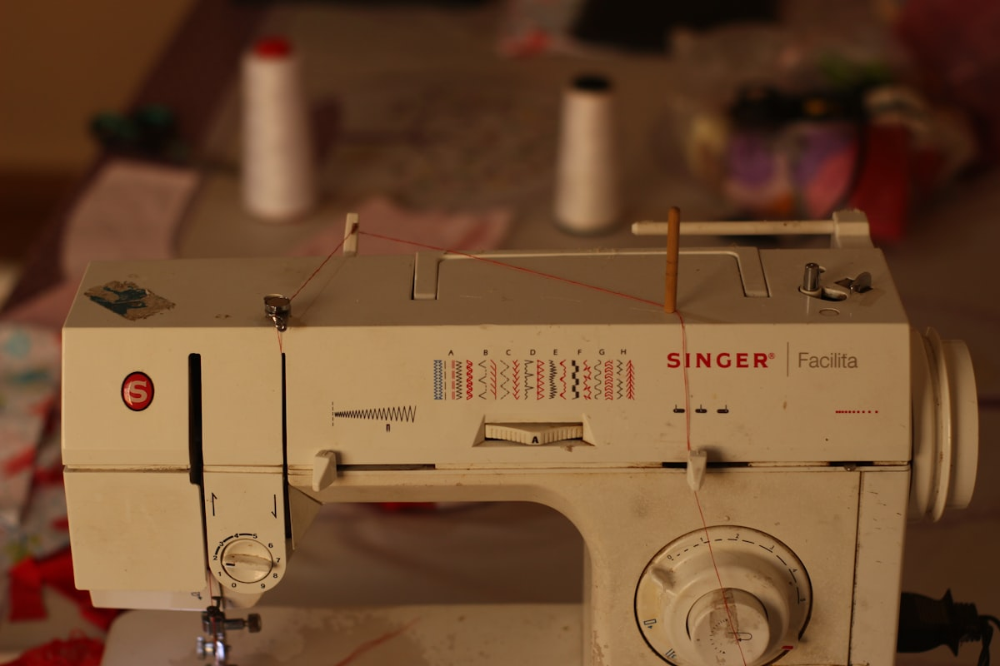
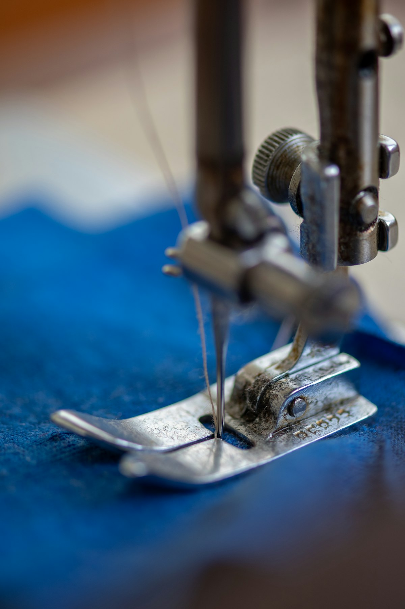

There is something profoundly honest about a garment that shows its making. In an industry obsessed with perfection — with invisible seams and flawless finishes and the illusion that clothes simply materialize on bodies — deconstruction asks a different question: what if we let the work show?
This isn't a new idea. Rei Kawakubo has been asking it since the early 1980s. Martin Margiela turned it into a philosophy. But the current generation of designers is taking it somewhere new — not as provocation, but as a genuine design language. The raw edge isn't a statement anymore. It's a vocabulary.

A detail from the Nocturne collection: raw-edge wool panel with exposed dart construction.
The Honesty of Imperfection
Consider the dart. In traditional tailoring, darts are pressed flat, hidden, made invisible. They shape the fabric to the body but deny their own existence. A deconstructed dart does the opposite — it stands proud, visible, a declaration that this fabric was shaped by human hands for a human body.
This is not laziness disguised as design. The precision required to make a visible seam look intentional is, if anything, greater than the precision required to hide one. Every raw edge must be cut with intention. Every exposed construction detail must be placed where it adds to the garment rather than diminishing it.
The raw edge isn't a statement anymore. It's a vocabulary. Willie Austin
Walk into any fabric store and run your hand along a bolt of cloth. Feel the selvage — that finished edge where the weft threads turn back on themselves. There's a beauty in that edge that most fashion consumers never see. Deconstruction invites them to.

The tension between structure and softness: tailored wool melting into draped silk charmeuse.
Structure as Expression
The most interesting thing happening in fashion right now is the conversation between structure and fluidity. Not choosing one or the other, but finding the space where they coexist. A jacket with architectural shoulders that softens into a draped hem. A shirt where one side is precisely tailored and the other falls freely.
This isn't about breaking rules for the sake of breaking rules. It's about understanding the rules so deeply that you can bend them with intention. Every great deconstructionist is, first, a master technician.
I think about this every time I sit down at a cutting table. The scissors know the difference between a careless cut and a careful one, even if the result looks the same. The fabric knows. And ultimately, the person wearing the garment knows, even if they can't articulate why one thing feels right and another doesn't.

Process documentation: pattern development for the asymmetric blazer, showing the evolution from conventional to deconstructed.
What Comes Next
The next chapter of this conversation won't look like what came before. We're moving past the point where exposed seams are surprising. The question now is subtler: how do you build a garment that feels both finished and ongoing? That suggests it could be taken apart and rebuilt?
The answer, I think, lies in modularity — pieces that connect and disconnect, that can be worn three ways or five ways, that invite the wearer to participate in the design. Not as a gimmick, but as a fundamental rethinking of what a garment is.
Fashion at its best is a collaboration between maker and wearer. Deconstruction — real deconstruction, not the surface-level version — makes that collaboration visible. And visibility, in this industry, is the most radical act of all.